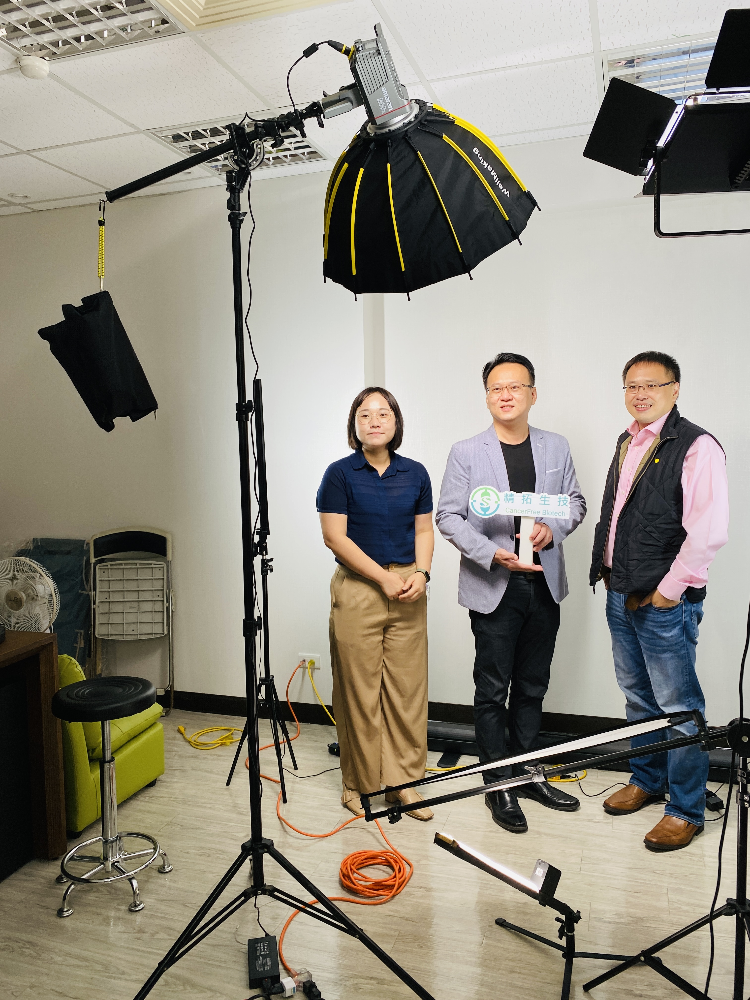
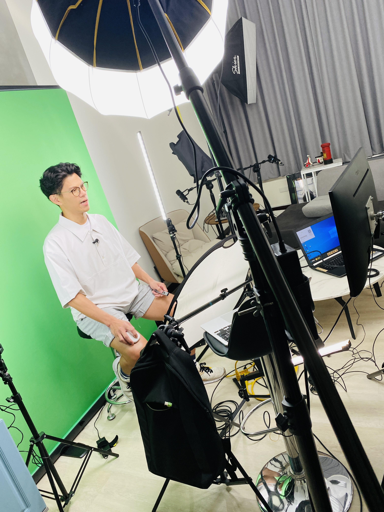
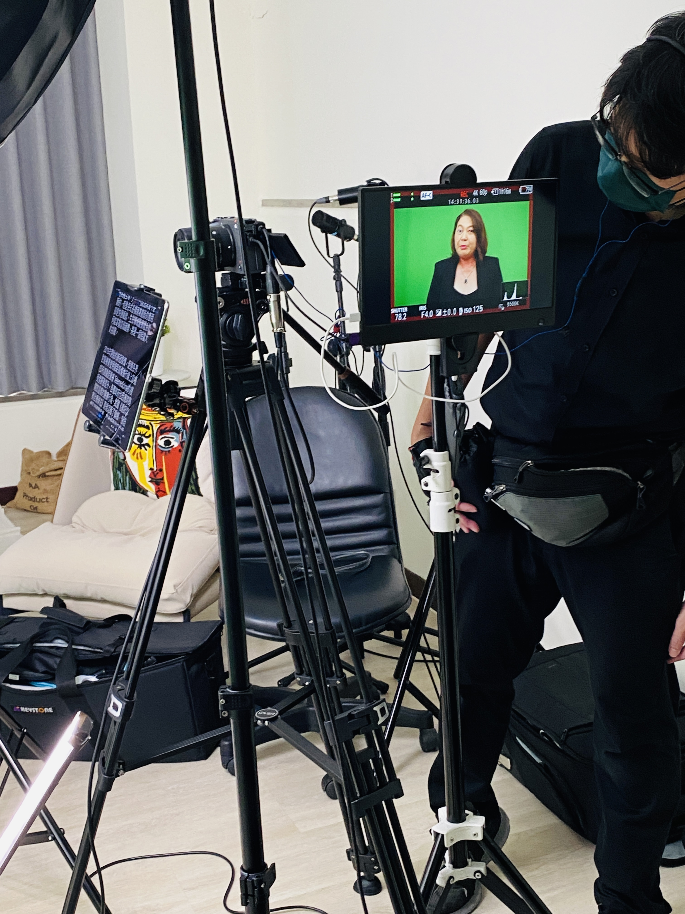
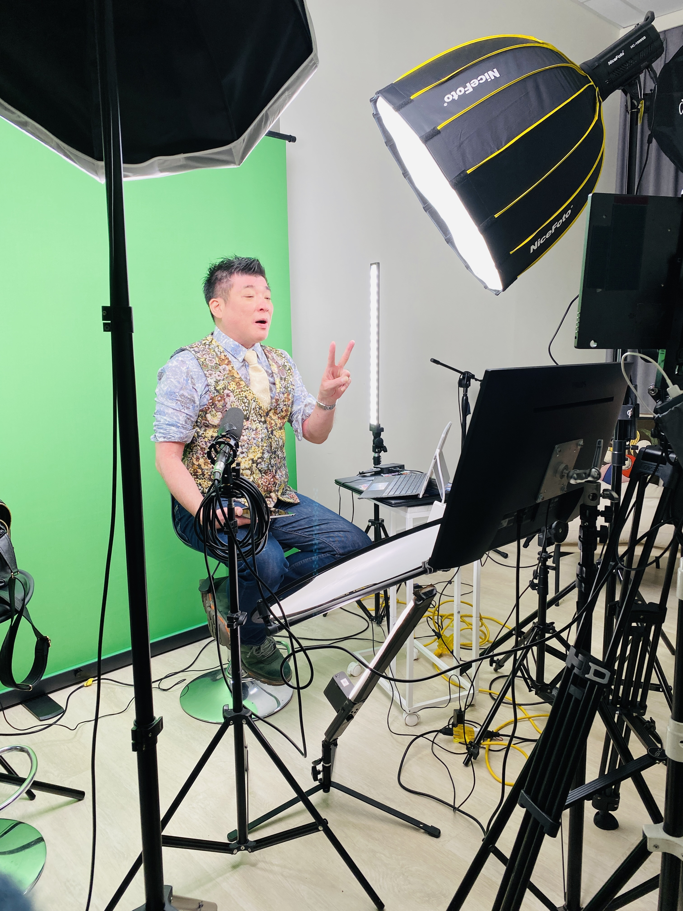
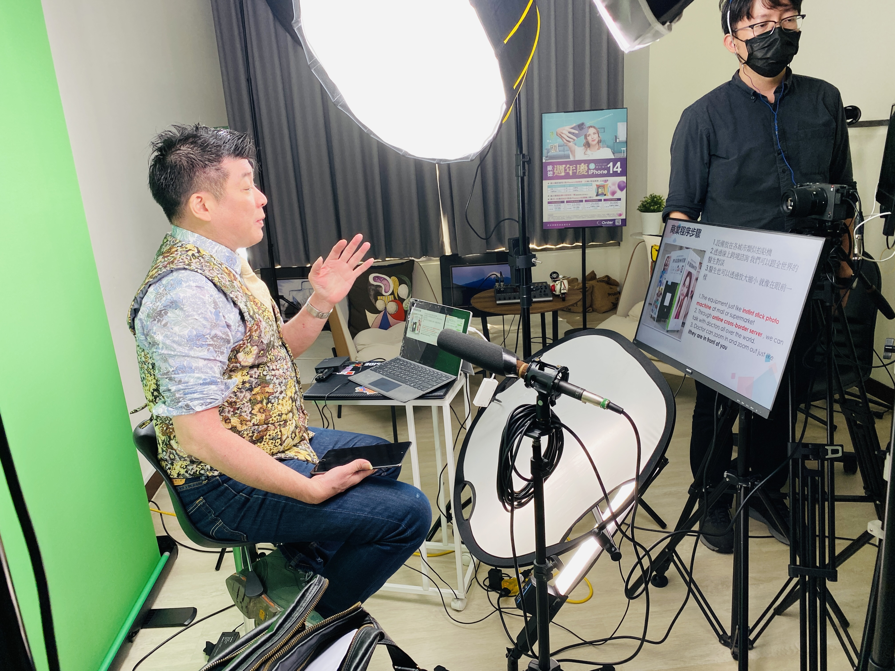
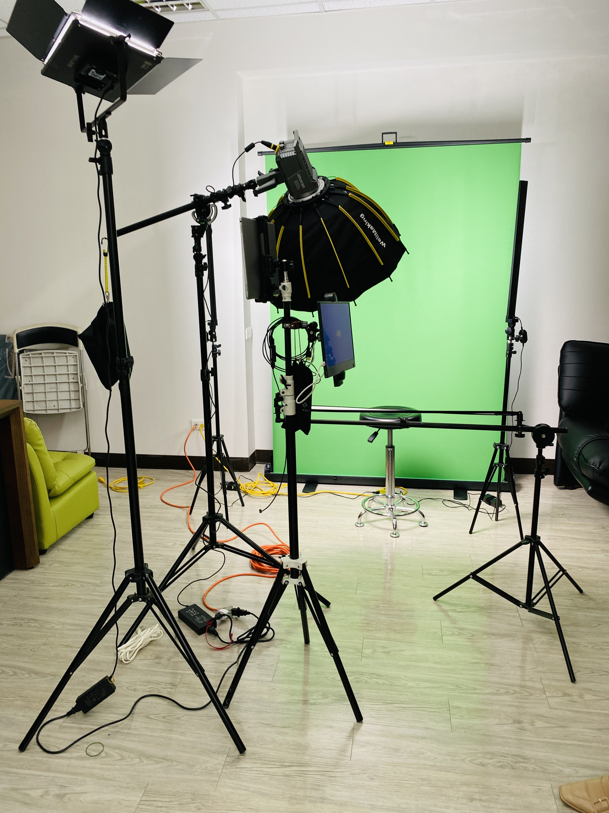
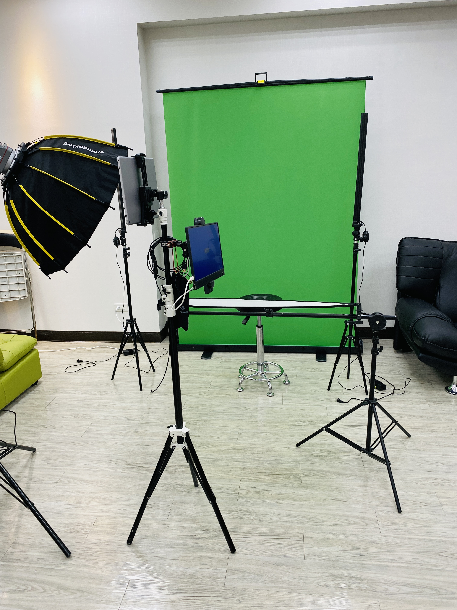

邁向元宇宙 替身醫療論壇
替身醫療論壇主要推廣虛擬和實體替身應用於患者治療之上的概念，讓大家瞭解替身醫療可能降低其在治療過程中所需承擔的風險，並且可以跨越距離及時間的限制。
推廣技術層面包含類器官、模式生物、大數據、元宇宙...等，讓一般大眾用新的角度了解目前這些技術開發有潛力替代病患本身並降低醫療上的風險，同時串聯學界及產業界，讓有潛力的技術或產品可以曝光。
此次論壇邀請到產官學研重量級講者來與我們分享後疫情時代所帶來的替身醫療的改變及發展。
以期在不久的將來，透過大數據、AI、AR/VR/XR或NFT就可以讓虛擬替身實現於臨床及教學上。
歷年活動


活動花絮







延伸閱讀
精拓生技